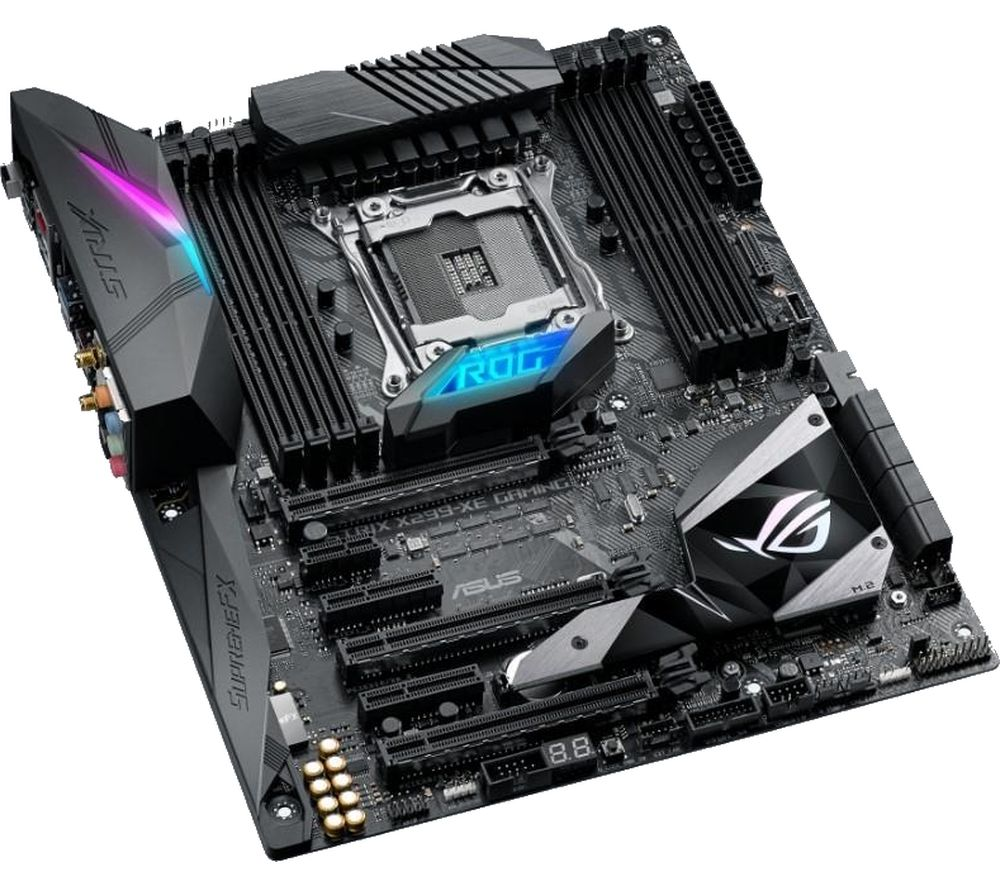
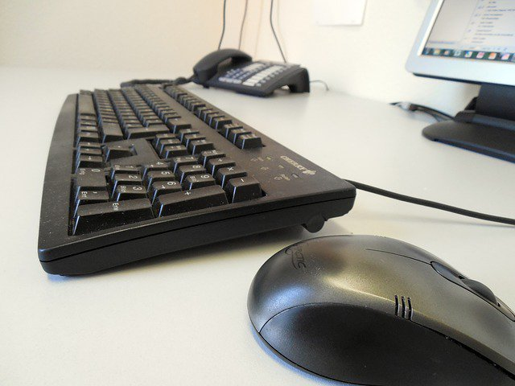

Parts Of Computer
Parts of Computer


Motherboard
A motherboard (sometimes alternatively known as the main circuit board, system board, baseboard, planar board or logic board,[1] or colloquially, a mobo) is the main printed circuit board (PCB) found in general purpose computers and other expandable systems. It holds and allows communication between many of the crucial electronic components of a system, such as the central processing unit (CPU) and memory, and provides connectors for other peripherals. Unlike a backplane, a motherboard usually contains significant sub-systems such as the central processor, the chipset's input/output and memory controllers, interface connectors, and other components integrated for general purpose use and applications. Motherboard specifically refers to a PCB with expansion capability and as the name suggests, this board is often referred to as the "mother" of all components attached to it, which often include peripherals, interface cards, and daughtercards: sound cards, video cards, network cards, hard drives, or other forms of persistent storage; TV tuner cards, cards providing extra USB or FireWire slots and a variety of other custom components. Similarly, the term mainboard is applied to devices with a single board and no additional expansions or capability, such as controlling boards in laser printers, televisions, washing machines, mobile phones and other embedded systems with limited expansion abilities.
Power Supply
A motherboard (sometimes alternatively known as the main circuit board, system board, baseboard, planar board or logic board,[1] or colloquially, a mobo) is the main printed circuit board (PCB) found in general purpose computers and other expandable systems. It holds and allows communication between many of the crucial electronic components of a system, such as the central processing unit (CPU) and memory, and provides connectors for other peripherals. Unlike a backplane, a motherboard usually contains significant sub-systems such as the central processor, the chipset's input/output and memory controllers, interface connectors, and other components integrated for general purpose use and applications. Motherboard specifically refers to a PCB with expansion capability and as the name suggests, this board is often referred to as the "mother" of all components attached to it, which often include peripherals, interface cards, and daughtercards: sound cards, video cards, network cards, hard drives, or other forms of persistent storage; TV tuner cards, cards providing extra USB or FireWire slots and a variety of other custom components. Similarly, the term mainboard is applied to devices with a single board and no additional expansions or capability, such as controlling boards in laser printers, televisions, washing machines, mobile phones and other embedded systems with limited expansion abilities.
Central Processing Unit
A central processing unit (CPU), also called a central processor or main processor, is the electronic circuitry within a computer that carries out the instructions of a computer program by performing the basic arithmetic, logic, controlling, and input/output (I/O) operations specified by the instructions. The computer industry has used the term "central processing unit" at least since the early 1960s. Traditionally, the term "CPU" refers to a processor, more specifically to its processing unit and control unit (CU), distinguishing these core elements of a computer from external components such as main memory and I/O circuitry. The form, design, and implementation of CPUs have changed over the course of their history, but their fundamental operation remains almost unchanged. Principal components of a CPU include the arithmetic logic unit (ALU) that performs arithmetic and logic operations, processor registers that supply operands to the ALU and store the results of ALU operations and a control unit that orchestrates the fetching (from memory) and execution of instructions by directing the coordinated operations of the ALU, registers and other components. Most modern CPUs are microprocessors, meaning they are contained on a single integrated circuit (IC) chip. An IC that contains a CPU may also contain memory, peripheral interfaces, and other components of a computer; such integrated devices are variously called microcontrollers or systems on a chip (SoC). Some computers employ a multi-core processor, which is a single chip containing two or more CPUs called "cores"; in that context, one can speak of such single chips as "sockets". Array processors or vector processors have multiple processors that operate in parallel, with no unit considered central. There also exists the concept of virtual CPUs which are an abstraction of dynamical aggregated computational resources.[4]
Hard Disk Drive
A hard disk drive (HDD), hard disk, hard drive, or fixed disk, is an electromechanical data storage device that uses magnetic storage to store and retrieve digital information using one or more rigid rapidly rotating disks (platters) coated with magnetic material. The platters are paired with magnetic heads, usually arranged on a moving actuator arm, which read and write data to the platter surfaces. Data is accessed in a random-access manner, meaning that individual blocks of data can be stored or retrieved in any order and not only sequentially. HDDs are a type of non-volatile storage, retaining stored data even when powered off. Introduced by IBM in 1956, HDDs became the dominant secondary storage device for general-purpose computers by the early 1960s. Continuously improved, HDDs have maintained this position into the modern era of servers and personal computers. More than 200 companies have produced HDDs historically, though after extensive industry consolidation most units are manufactured by Seagate, Toshiba, and Western Digital. HDDs dominate the volume of storage produced (exabytes per year) for servers. Though production is growing slowly, sales revenues and unit shipments are declining because solid-state drives (SSDs) have higher data-transfer rates, higher areal storage density, better reliability, and much lower latency and access times. The revenues for SSDs, most of which use NAND, slightly exceed those for HDDs.Though SSDs have nearly 10 times higher cost per bit, they are replacing HDDs in applications where speed, power consumption, small size, and durability are important. The primary characteristics of an HDD are its capacity and performance. Capacity is specified in unit prefixes corresponding to powers of 1000: a 1-terabyte (TB) drive has a capacity of 1,000 gigabytes (GB; where 1 gigabyte = 1 billion bytes). Typically, some of an HDD's capacity is unavailable to the user because it is used by the file system and the computer operating system, and possibly inbuilt redundancy for error correction and recovery. Also there is confusion regarding storage capacity, since capacities are stated in decimal Gigabytes (powers of 10) by HDD manufacturers, whereas some operating systems report capacities in binary Gibibytes, which results in a smaller number than advertised. Performance is specified by the time required to move the heads to a track or cylinder (average access time) adding the time it takes for the desired sector to move under the head (average latency, which is a function of the physical rotational speed in revolutions per minute), and finally the speed at which the data is transmitted (data rate). The two most common form factors for modern HDDs are 3.5-inch, for desktop computers, and 2.5-inch, primarily for laptops. HDDs are connected to systems by standard interface cables such as PATA (Parallel ATA), SATA (Serial ATA), USB or SAS (Serial Attached SCSI) cables.
Solid State Drive
A solid-state drive (SSD) is a solid-state storage device that uses integrated circuit assemblies as memory to store data persistently. It is also sometimes called a solid-state device or a solid-state disk, although SSDs do not have physical disks. SSDs can use traditional hard disk drive (HDD) interfaces and form factors, or newer form factors and interfaces that have been developed to address specific advantages of the flash memory technology used in SSDs. Traditional interfaces (e.g., SATA and SAS), and standard HDD form factors allow such SSDs to be used as drop-in replacements for HDDs in computers and other devices. Newer form factors such as mSATA, M.2, U.2, and Ruler SSD and higher speed interfaces such as NVMe over PCI Express can increase performance over HDD performance. SSDs have no moving mechanical components. This distinguishes them from conventional electromechanical drives such as hard disk drives (HDDs) or floppy disks, which contain spinning disks and movable read/write heads. Compared with electromechanical drives, SSDs are typically more resistant to physical shock, run silently, have quicker access time and lower latency.While the price of SSDs has continued to decline over time, SSDs are (as of 2018) still more expensive per unit of storage than HDDs and are expected to remain so into the next decade. As of 2017, most SSDs use 3D TLC NAND-based flash memory (often simply called NAND). NAND is non-volatile memory, which retains data even when power is removed. For applications requiring fast access but not necessarily data persistence after power loss, SSDs may be constructed from random-access memory (RAM). Such devices may employ batteries as integrated power sources to retain data for a certain amount of time after external power is lost. Since 2018, some SSDs have 3D QLC (4 bits per cell) NAND, which increases capacity and lowers costs, but at the expense of a lower endurance rating. For example, a 1 TB QLC NAND SSD has about the same endurance rating as a 500 GB TLC (3-bit) NAND SSD. High-performance SSDs may use SLC (1-bit) or MLC (2-bit) NAND, which can be much faster than TLC or QLC NAND, but have lower capacity and are significantly more expensive, making them better suited for caches or other applications that require very high performance. However, all SSDs still store data in electrical charges, which slowly leak over time if left without power. This causes worn out drives (that have exceeded their endurance rating) to start losing data typically after one (if stored at 30 °C) to two (at 25 °C) years in storage; for new drives it takes longer. Therefore, SSDs are not suitable for archival storage. The only exception to this rule are SSDs based on 3D XPoint memory (sold by Intel under the Optane brand), which stores data not by storing electrical charges in cells, but by changing the electrical resistance of the cells. 3D XPoint, however, is a relatively new technology with unknown data-retention characteristics and may not be suitable for archival purposes. Hybrid drives or solid-state hybrid drives (SSHDs), such as Apple's Fusion Drive, combine features of SSDs and HDDs in the same unit, containing a large hard disk drive and an SSD cache to improve performance of frequently-accessed data.
Video Card
A video card (also called a display card, graphics card, display adapter, or graphics adapter) is an expansion card which generates a feed of output images to a display device (such as a computer monitor). Frequently, these are advertised as discrete or dedicated graphics cards, emphasizing the distinction between these and integrated graphics. At the core of both is the graphics processing unit (GPU), which is the main part that does the actual computations, but should not be confused as the video card as a whole, although "GPU" is often used to refer to video cards. Most video cards are not limited to simple display output. Their integrated graphics processor can perform additional processing, removing this task from the central processor of the computer. For example, Nvidia and AMD (ATi) produced cards render the graphics pipeline OpenGL and DirectX on the hardware level. In the later 2010s, there has also been a tendency to use the computing capabilities of the graphics processor to solve non-graphic tasks. Usually the graphics card is made in the form of a printed circuit board (expansion board) and inserted into an expansion slot, universal or specialized (AGP, PCI Express). Some have been made using dedicated enclosures, which are connected to the computer via a docking station or a cable.
Optical Drive
In computing, an optical disc drive (ODD) is a disc drive that uses laser light or electromagnetic waves within or near the visible light spectrum as part of the process of reading or writing data to or from optical discs. Some drives can only read from certain discs, but recent drives can both read and record, also called burners or writers. Compact discs, DVDs, and Blu-ray discs are common types of optical media which can be read and recorded by such drives. Optical disc drives that are no longer in production include CD-ROM drive, CD writer drive, combo (CD-RW/DVD-ROM) drive, and DVD writer drive supporting certain recordable and rewritable DVD formats (such as DVD-R(W) only, DVD+R(W) only, DVD-RAM only, and all DVD formats except DVD-R DL). As of 2015, DVD writer drive supporting all existing recordable and rewritable DVD formats is the most common for desktop PCs and laptops. There are also  the DVD-ROM drive, BD-ROM drive, Blu-ray Disc combo (BD-ROM/DVD±RW/CD-RW) drive, and Blu-ray Disc writer drive.
Optical disc drives are an integral part of standalone appliances such as CD players, DVD players, Blu-ray disc players, DVD recorders, certain desktop video game consoles, such as Sony PlayStation 4, Microsoft Xbox One, Nintendo Wii U, and Sony PlayStation 3, and certain portable video game consoles, such as Sony PlayStation Portable. They are also very commonly used in computers to read software and consumer media distributed on disc and to record discs for archival and data exchange purposes. Floppy disk drives, with capacity of 1.44 MB, have been made obsolete: optical media are cheap and have vastly higher capacity to handle the large files used since the days of floppy discs, and the vast majority of computers and much consumer entertainment hardware have optical writers. USB flash drives, high-capacity, small, and inexpensive, are suitable where read/write capability is required.
Disc recording is restricted to storing files playable on consumer appliances (films, music, etc.), relatively small volumes of data (e.g. a standard DVD holds 4.7 gigabytes) for local use, and data for distribution, but only on a small scale; mass-producing large numbers of identical discs is cheaper and faster than individual recording.
the DVD-ROM drive, BD-ROM drive, Blu-ray Disc combo (BD-ROM/DVD±RW/CD-RW) drive, and Blu-ray Disc writer drive.
Optical disc drives are an integral part of standalone appliances such as CD players, DVD players, Blu-ray disc players, DVD recorders, certain desktop video game consoles, such as Sony PlayStation 4, Microsoft Xbox One, Nintendo Wii U, and Sony PlayStation 3, and certain portable video game consoles, such as Sony PlayStation Portable. They are also very commonly used in computers to read software and consumer media distributed on disc and to record discs for archival and data exchange purposes. Floppy disk drives, with capacity of 1.44 MB, have been made obsolete: optical media are cheap and have vastly higher capacity to handle the large files used since the days of floppy discs, and the vast majority of computers and much consumer entertainment hardware have optical writers. USB flash drives, high-capacity, small, and inexpensive, are suitable where read/write capability is required.
Disc recording is restricted to storing files playable on consumer appliances (films, music, etc.), relatively small volumes of data (e.g. a standard DVD holds 4.7 gigabytes) for local use, and data for distribution, but only on a small scale; mass-producing large numbers of identical discs is cheaper and faster than individual recording.
Input Output Devices
In computing, input/output or I/O (or, informally, io or IO) is the communication between an information processing system, such as a computer, and the outside world, possibly a human or another information processing system. Inputs are the signals or data received by the system and outputs are the signals or data sent from it. The term can also be used as part of an action; to "perform I/O" is to perform an input or output operation. I/O devices are the pieces of hardware used by a human (or other system) to communicate with a computer. For instance, a keyboard or computer mouse is an input device for a computer, while monitors and printers are output devices. Devices for communication between computers, such as modems and network cards, typically perform both input and output operations. The designation of a device as either input or output depends on perspective. Mouse and keyboards take physical movements that the human user outputs and convert them into input signals that a computer can understand; the output from these devices is the computer's input. Similarly, printers and monitors take signals that a computer outputs as input, and they convert these signals into a representation that human users can understand. From the human user's perspective, the process of reading or seeing these representations is receiving output; this type of interaction between computers and humans is studied in the field of human–computer interaction. In computer architecture, the combination of the CPU and main memory, to which the CPU can read or write directly using individual instructions, is considered the brain of a computer. Any transfer of information to or from the CPU/memory combo, for example by reading data from a disk drive, is considered I/O.[1] The CPU and its supporting circuitry may provide memory-mapped I/O that is used in low-level computer programming, such as in the implementation of device drivers, or may provide access to I/O channels. An I/O algorithm is one designed to exploit locality and perform efficiently when exchanging data with a secondary storage device, such as a disk drive.